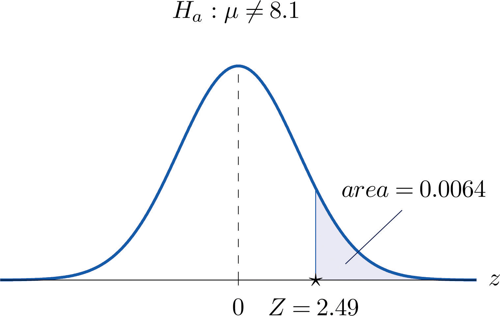
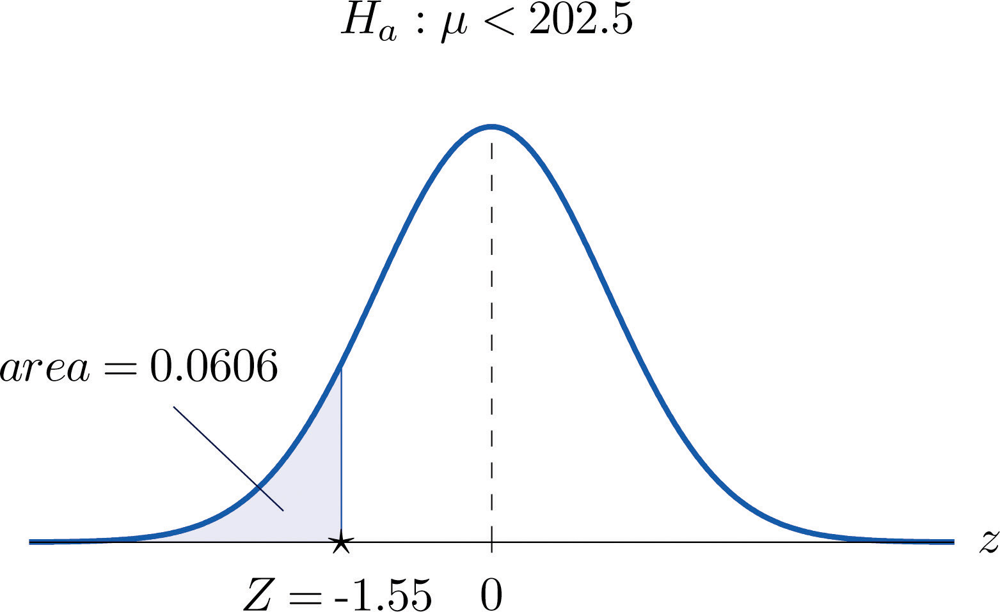
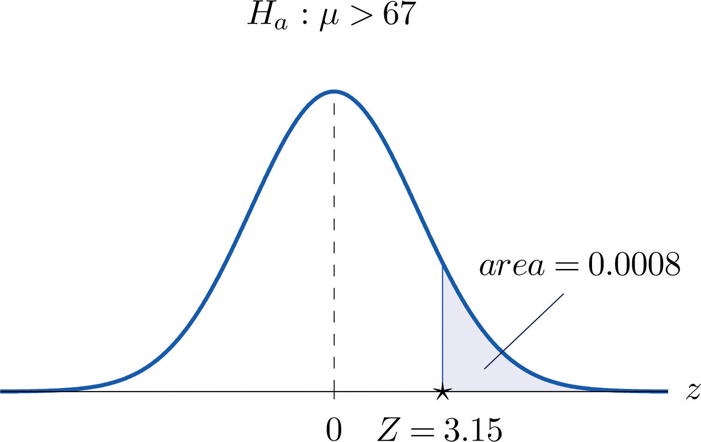
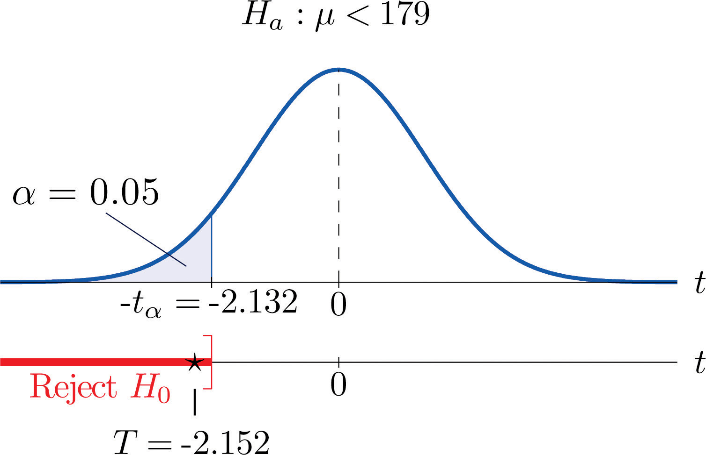
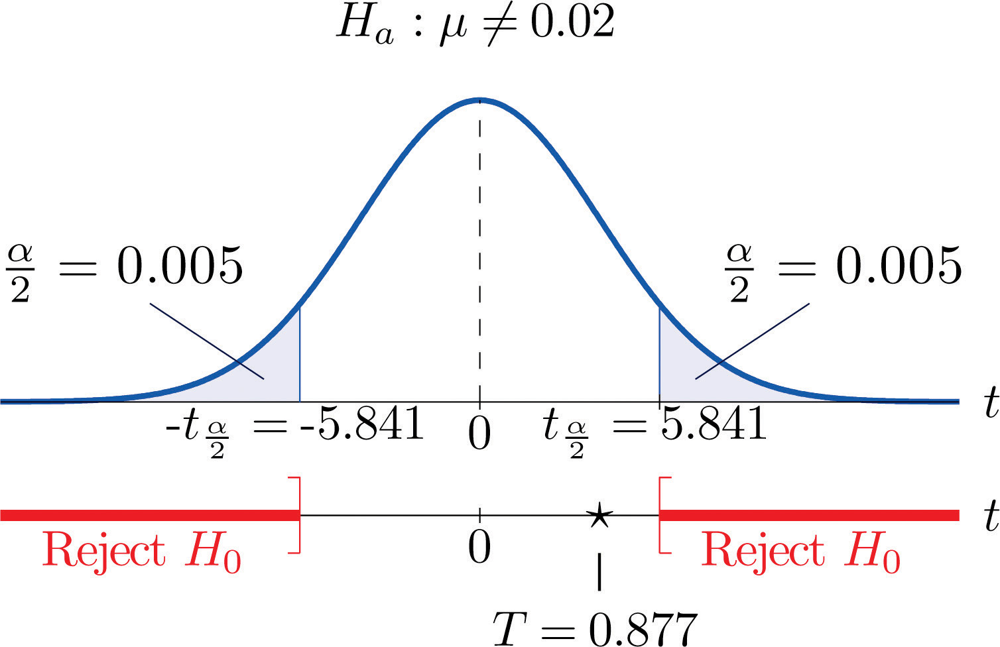
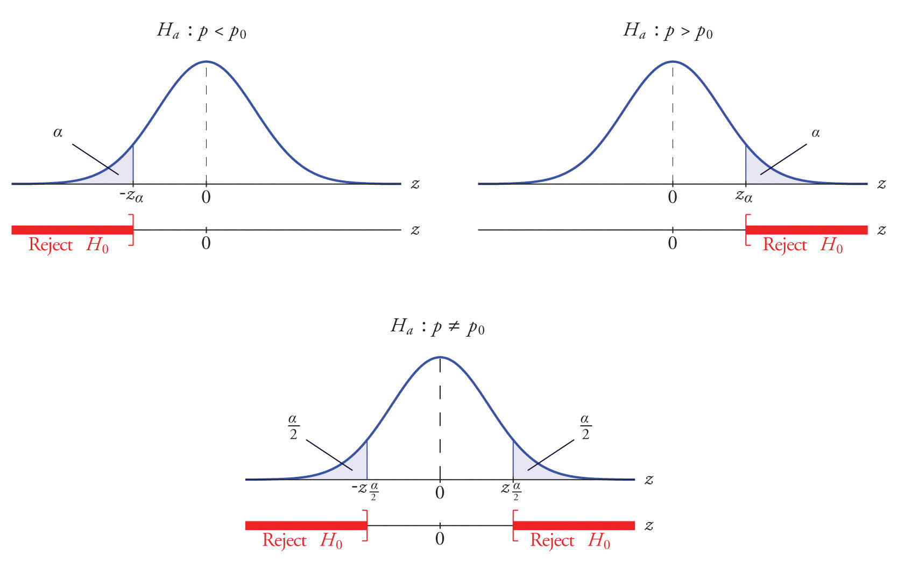
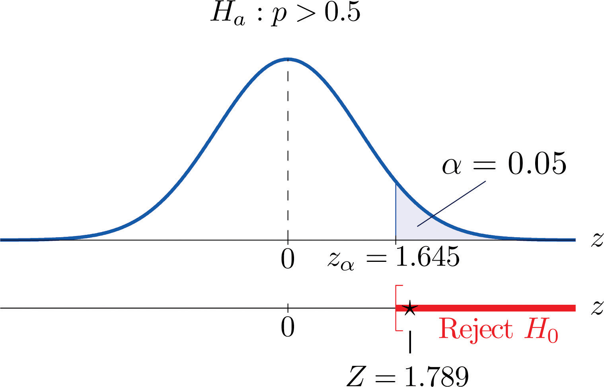
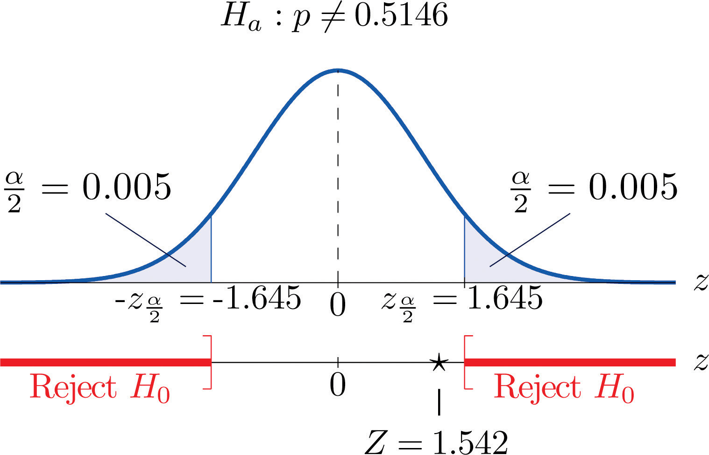
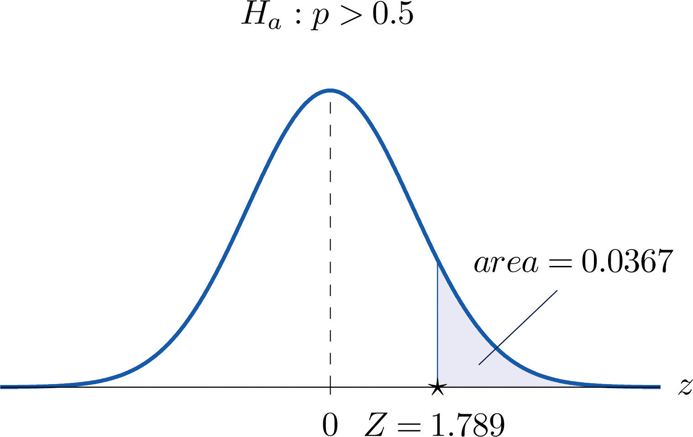
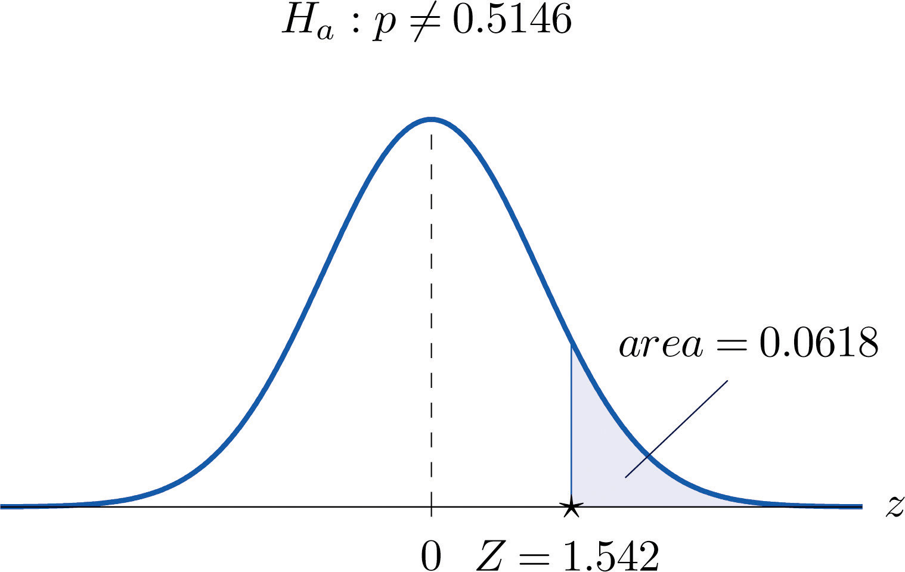

A manufacturer of emergency equipment asserts that a respirator that it makes delivers pure air for 75 minutes on average. A government regulatory agency is charged with testing such claims, in this case to verify that the average time is not less than 75 minutes. To do so it would select a random sample of respirators, compute the mean time that they deliver pure air, and compare that mean to the asserted time 75 minutes.
In the sampling that we have studied so far the goal has been to estimate a population parameter. But the sampling done by the government agency has a somewhat different objective, not so much to estimate the population mean μ as to test an assertion—or a hypothesisA statement about a population parameter.—about it, namely, whether it is as large as 75 or not. The agency is not necessarily interested in the actual value of μ, just whether it is as claimed. Their sampling is done to perform a test of hypotheses, the subject of this chapter.
A hypothesis about the value of a population parameter is an assertion about its value. As in the introductory example we will be concerned with testing the truth of two competing hypotheses, only one of which can be true.
The null hypothesisThe statement that is assumed to be true unless there is convincing evidence to the contrary., denoted H0, is the statement about the population parameter that is assumed to be true unless there is convincing evidence to the contrary.
The alternative hypothesisA statement that is accepted as true only if there is convincing evidence in favor of it., denoted Ha, is a statement about the population parameter that is contradictory to the null hypothesis, and is accepted as true only if there is convincing evidence in favor of it.
Hypothesis testingA statistical procedure in which a choice is made between a null hypothesis and a specific alternative hypothesis based on information in a sample. is a statistical procedure in which a choice is made between a null hypothesis and an alternative hypothesis based on information in a sample.
The end result of a hypotheses testing procedure is a choice of one of the following two possible conclusions:
The null hypothesis typically represents the status quo, or what has historically been true. In the example of the respirators, we would believe the claim of the manufacturer unless there is reason not to do so, so the null hypotheses is The alternative hypothesis in the example is the contradictory statement The null hypothesis will always be an assertion containing an equals sign, but depending on the situation the alternative hypothesis can have any one of three forms: with the symbol “<,” as in the example just discussed, with the symbol “>,” or with the symbol “≠” The following two examples illustrate the latter two cases.
A publisher of college textbooks claims that the average price of all hardbound college textbooks is $127.50. A student group believes that the actual mean is higher and wishes to test their belief. State the relevant null and alternative hypotheses.
Solution:
The default option is to accept the publisher’s claim unless there is compelling evidence to the contrary. Thus the null hypothesis is Since the student group thinks that the average textbook price is greater than the publisher’s figure, the alternative hypothesis in this situation is
The recipe for a bakery item is designed to result in a product that contains 8 grams of fat per serving. The quality control department samples the product periodically to insure that the production process is working as designed. State the relevant null and alternative hypotheses.
Solution:
The default option is to assume that the product contains the amount of fat it was formulated to contain unless there is compelling evidence to the contrary. Thus the null hypothesis is Since to contain either more fat than desired or to contain less fat than desired are both an indication of a faulty production process, the alternative hypothesis in this situation is that the mean is different from 8.0, so
In Note 8.8 "Example 1", the textbook example, it might seem more natural that the publisher’s claim be that the average price is at most $127.50, not exactly $127.50. If the claim were made this way, then the null hypothesis would be , and the value $127.50 given in the example would be the one that is least favorable to the publisher’s claim, the null hypothesis. It is always true that if the null hypothesis is retained for its least favorable value, then it is retained for every other value.
Thus in order to make the null and alternative hypotheses easy for the student to distinguish, in every example and problem in this text we will always present one of the two competing claims about the value of a parameter with an equality. The claim expressed with an equality is the null hypothesis. This is the same as always stating the null hypothesis in the least favorable light. So in the introductory example about the respirators, we stated the manufacturer’s claim as “the average is 75 minutes” instead of the perhaps more natural “the average is at least 75 minutes,” essentially reducing the presentation of the null hypothesis to its worst case.
The first step in hypothesis testing is to identify the null and alternative hypotheses.
Although we will study hypothesis testing in situations other than for a single population mean (for example, for a population proportion instead of a mean or in comparing the means of two different populations), in this section the discussion will always be given in terms of a single population mean μ.
The null hypothesis always has the form for a specific number (in the respirator example , in the textbook example , and in the baked goods example ). Since the null hypothesis is accepted unless there is strong evidence to the contrary, the test procedure is based on the initial assumption that H0 is true. This point is so important that we will repeat it in a display:
The test procedure is based on the initial assumption that H0 is true.
The criterion for judging between H0 and Ha based on the sample data is: if the value of would be highly unlikely to occur if H0 were true, but favors the truth of Ha, then we reject H0 in favor of Ha. Otherwise we do not reject H0.
Supposing for now that follows a normal distribution, when the null hypothesis is true the density function for the sample mean must be as in Figure 8.1 "The Density Curve for ": a bell curve centered at Thus if H0 is true then is likely to take a value near and is unlikely to take values far away. Our decision procedure therefore reduces simply to:
Figure 8.1 The Density Curve for if H0 Is True

Think of the respirator example, for which the null hypothesis is , the claim that the average time air is delivered for all respirators is 75 minutes. If the sample mean is 75 or greater then we certainly would not reject H0 (since there is no issue with an emergency respirator delivering air even longer than claimed).
If the sample mean is slightly less than 75 then we would logically attribute the difference to sampling error and also not reject H0 either.
Values of the sample mean that are smaller and smaller are less and less likely to come from a population for which the population mean is 75. Thus if the sample mean is far less than 75, say around 60 minutes or less, then we would certainly reject H0, because we know that it is highly unlikely that the average of a sample would be so low if the population mean were 75. This is the rare event criterion for rejection: what we actually observed () would be so rare an event if μ = 75 were true that we regard it as much more likely that the alternative hypothesis μ < 75 holds.
In summary, to decide between H0 and Ha in this example we would select a “rejection regionAn interval or union of intervals such that the null hypothesis is rejected if and only if the statistic of interest lies in this region.” of values sufficiently far to the left of 75, based on the rare event criterion, and reject H0 if the sample mean lies in the rejection region, but not reject H0 if it does not.
Each different form of the alternative hypothesis Ha has its own kind of rejection region:
The key issue in our line of reasoning is the question of how to determine the number C or numbers C and C′, called the critical value or critical values of the statistic, that determine the rejection region.
The critical valueThe number or one of a pair of numbers that determines the rejection region. or critical values of a test of hypotheses are the number or numbers that determine the rejection region.
Suppose the rejection region is a single interval, so we need to select a single number C. Here is the procedure for doing so. We select a small probability, denoted , say 1%, which we take as our definition of “rare event:” an event is “rare” if its probability of occurrence is less than (In all the examples and problems in this text the value of will be given already.) The probability that takes a value in an interval is the area under its density curve and above that interval, so as shown in Figure 8.2 (drawn under the assumption that H0 is true, so that the curve centers at ) the critical value C is the value of that cuts off a tail area in the probability density curve of When the rejection region is in two pieces, that is, composed of two intervals, the total area above both of them must be , so the area above each one is , as also shown in Figure 8.2.
Figure 8.2

The number is the total area of a tail or a pair of tails.
In the context of Note 8.9 "Example 2", suppose that it is known that the population is normally distributed with standard deviation σ = 0.15 gram, and suppose that the test of hypotheses versus will be performed with a sample of size 5. Construct the rejection region for the test for the choice Explain the decision procedure and interpret it.
Solution:
If H0 is true then the sample mean is normally distributed with mean and standard deviation
Since Ha contains the ≠ symbol the rejection region will be in two pieces, each one corresponding to a tail of area From Figure 12.3 "Critical Values of ", , so C and C′ are 1.645 standard deviations of to the right and left of its mean 8.0:
C = 8.0 − (1.645)(0.067) = 7.89 and C′ = 8.0 + (1.645)(0.067) = 8.11The result is shown in Figure 8.3 "Rejection Region for the Choice ".
Figure 8.3 Rejection Region for the Choice

The decision procedure is: take a sample of size 5 and compute the sample mean If is either 7.89 grams or less or 8.11 grams or more then reject the hypothesis that the average amount of fat in all servings of the product is 8.0 grams in favor of the alternative that it is different from 8.0 grams. Otherwise do not reject the hypothesis that the average amount is 8.0 grams.
The reasoning is that if the true average amount of fat per serving were 8.0 grams then there would be less than a 10% chance that a sample of size 5 would produce a mean of either 7.89 grams or less or 8.11 grams or more. Hence if that happened it would be more likely that the value 8.0 is incorrect (always assuming that the population standard deviation is 0.15 gram).
Because the rejection regions are computed based on areas in tails of distributions, as shown in Figure 8.2, hypothesis tests are classified according to the form of the alternative hypothesis in the following way.
If Ha has the form the test is called a two-tailed test.
If Ha has the form the test is called a left-tailed test.
If Ha has the form the test is called a right-tailed test.
Each of the last two forms is also called a one-tailed test.
The format of the testing procedure in general terms is to take a sample and use the information it contains to come to a decision about the two hypotheses. As stated before our decision will always be either
There are four possible outcomes of hypothesis testing procedure, as shown in the following table:
| True State of Nature | |||
| H0 is true | H0 is false | ||
| Our Decision | Do not reject H0 | Correct decision | Type II error |
| Reject H0 | Type I error | Correct decision | |
As the table shows, there are two ways to be right and two ways to be wrong. Typically to reject H0 when it is actually true is a more serious error than to fail to reject it when it is false, so the former error is labeled “Type I” and the latter error “Type II.”
In a test of hypotheses, a Type I errorRejection of a true null hypothesis. is the decision to reject H0 when it is in fact true. A Type II errorFailure to reject a false null hypothesis. is the decision not to reject H0 when it is in fact not true.
Unless we perform a census we do not have certain knowledge, so we do not know whether our decision matches the true state of nature or if we have made an error. We reject H0 if what we observe would be a “rare” event if H0 were true. But rare events are not impossible: they occur with probability Thus when H0 is true, a rare event will be observed in the proportion of repeated similar tests, and H0 will be erroneously rejected in those tests. Thus is the probability that in following the testing procedure to decide between H0 and Ha we will make a Type I error.
The number that is used to determine the rejection region is called the level of significance of the testThe probability that defines an event as “rare;” the probability that the test procedure will lead to a Type I error.. It is the probability that the test procedure will result in a Type I error.
The probability of making a Type II error is too complicated to discuss in a beginning text, so we will say no more about it than this: for a fixed sample size, choosing smaller in order to reduce the chance of making a Type I error has the effect of increasing the chance of making a Type II error. The only way to simultaneously reduce the chances of making either kind of error is to increase the sample size.
Hypotheses testing will be considered in a number of contexts, and great unification as well as simplification results when the relevant sample statistic is standardized by subtracting its mean from it and then dividing by its standard deviation. The resulting statistic is called a standardized test statistic. In every situation treated in this and the following two chapters the standardized test statistic will have either the standard normal distribution or Student’s t-distribution.
A standardized test statisticThe standardized statistic used in performing the test. for a hypothesis test is the statistic that is formed by subtracting from the statistic of interest its mean and dividing by its standard deviation.
For example, reviewing Note 8.14 "Example 3", if instead of working with the sample mean we instead work with the test statistic
then the distribution involved is standard normal and the critical values are just The extra work that was done to find that C = 7.89 and is eliminated. In every hypothesis test in this book the standardized test statistic will be governed by either the standard normal distribution or Student’s t-distribution. Information about rejection regions is summarized in the following tables:
| When the test statistic has the standard normal distribution: | ||
| Symbol in Ha | Terminology | Rejection Region |
| < | Left-tailed test | |
| > | Right-tailed test | |
| ≠ | Two-tailed test | |
| When the test statistic has Student’s t-distribution: | ||
| Symbol in Ha | Terminology | Rejection Region |
| < | Left-tailed test | |
| > | Right-tailed test | |
| ≠ | Two-tailed test | |
Every instance of hypothesis testing discussed in this and the following two chapters will have a rejection region like one of the six forms tabulated in the tables above.
No matter what the context a test of hypotheses can always be performed by applying the following systematic procedure, which will be illustrated in the examples in the succeeding sections.
The procedure that we have outlined in this section is called the “Critical Value Approach” to hypothesis testing to distinguish it from an alternative but equivalent approach that will be introduced at the end of Section 8.3 "The Observed Significance of a Test".
State the null and alternative hypotheses for each of the following situations. (That is, identify the correct number and write and the appropriate analogous expression for Ha.)
State the null and alternative hypotheses for each of the following situations. (That is, identify the correct number and write and the appropriate analogous expression for Ha.)
Describe the two types of errors that can be made in a test of hypotheses.
Under what circumstance is a test of hypotheses certain to yield a correct decision?
A Type I error is made when a true H0 is rejected. A Type II error is made when a false H0 is not rejected.
In this section we describe and demonstrate the procedure for conducting a test of hypotheses about the mean of a population in the case that the sample size n is at least 30. The Central Limit Theorem states that is approximately normally distributed, and has mean and standard deviation , where μ and σ are the mean and the standard deviation of the population. This implies that the statistic
has the standard normal distribution, which means that probabilities related to it are given in Figure 12.2 "Cumulative Normal Probability" and the last line in Figure 12.3 "Critical Values of ".
If we know σ then the statistic in the display is our test statistic. If, as is typically the case, we do not know σ, then we replace it by the sample standard deviation s. Since the sample is large the resulting test statistic still has a distribution that is approximately standard normal.
The test statistic has the standard normal distribution.
The distribution of the standardized test statistic and the corresponding rejection region for each form of the alternative hypothesis (left-tailed, right-tailed, or two-tailed), is shown in Figure 8.4 "Distribution of the Standardized Test Statistic and the Rejection Region".
Figure 8.4 Distribution of the Standardized Test Statistic and the Rejection Region

It is hoped that a newly developed pain reliever will more quickly produce perceptible reduction in pain to patients after minor surgeries than a standard pain reliever. The standard pain reliever is known to bring relief in an average of 3.5 minutes with standard deviation 2.1 minutes. To test whether the new pain reliever works more quickly than the standard one, 50 patients with minor surgeries were given the new pain reliever and their times to relief were recorded. The experiment yielded sample mean minutes and sample standard deviation s = 1.5 minutes. Is there sufficient evidence in the sample to indicate, at the 5% level of significance, that the newly developed pain reliever does deliver perceptible relief more quickly?
Solution:
We perform the test of hypotheses using the five-step procedure given at the end of Section 8.1 "The Elements of Hypothesis Testing".
Step 1. The natural assumption is that the new drug is no better than the old one, but must be proved to be better. Thus if μ denotes the average time until all patients who are given the new drug experience pain relief, the hypothesis test is
Step 2. The sample is large, but the population standard deviation is unknown (the 2.1 minutes pertains to the old drug, not the new one). Thus the test statistic is
and has the standard normal distribution.
Step 3. Inserting the data into the formula for the test statistic gives
Step 5. As shown in Figure 8.5 "Rejection Region and Test Statistic for " the test statistic falls in the rejection region. The decision is to reject H0. In the context of the problem our conclusion is:
The data provide sufficient evidence, at the 5% level of significance, to conclude that the average time until patients experience perceptible relief from pain using the new pain reliever is smaller than the average time for the standard pain reliever.
Figure 8.5 Rejection Region and Test Statistic for Note 8.27 "Example 4"

A cosmetics company fills its best-selling 8-ounce jars of facial cream by an automatic dispensing machine. The machine is set to dispense a mean of 8.1 ounces per jar. Uncontrollable factors in the process can shift the mean away from 8.1 and cause either underfill or overfill, both of which are undesirable. In such a case the dispensing machine is stopped and recalibrated. Regardless of the mean amount dispensed, the standard deviation of the amount dispensed always has value 0.22 ounce. A quality control engineer routinely selects 30 jars from the assembly line to check the amounts filled. On one occasion, the sample mean is ounces and the sample standard deviation is s = 0.25 ounce. Determine if there is sufficient evidence in the sample to indicate, at the 1% level of significance, that the machine should be recalibrated.
Solution:
Step 1. The natural assumption is that the machine is working properly. Thus if μ denotes the mean amount of facial cream being dispensed, the hypothesis test is
Step 2. The sample is large and the population standard deviation is known. Thus the test statistic is
and has the standard normal distribution.
Step 3. Inserting the data into the formula for the test statistic gives
Step 5. As shown in Figure 8.6 "Rejection Region and Test Statistic for " the test statistic does not fall in the rejection region. The decision is not to reject H0. In the context of the problem our conclusion is:
The data do not provide sufficient evidence, at the 1% level of significance, to conclude that the average amount of product dispensed is different from 8.1 ounce. We conclude that the machine does not need to be recalibrated.
Figure 8.6 Rejection Region and Test Statistic for Note 8.28 "Example 5"

Find the rejection region (for the standardized test statistic) for each hypothesis test.
Find the rejection region (for the standardized test statistic) for each hypothesis test.
Find the rejection region (for the standardized test statistic) for each hypothesis test. Identify the test as left-tailed, right-tailed, or two-tailed.
Find the rejection region (for the standardized test statistic) for each hypothesis test. Identify the test as left-tailed, right-tailed, or two-tailed.
Compute the value of the test statistic for the indicated test, based on the information given.
Compute the value of the test statistic for the indicated test, based on the information given.
Perform the indicated test of hypotheses, based on the information given.
Perform the indicated test of hypotheses, based on the information given.
In the past the average length of an outgoing telephone call from a business office has been 143 seconds. A manager wishes to check whether that average has decreased after the introduction of policy changes. A sample of 100 telephone calls produced a mean of 133 seconds, with a standard deviation of 35 seconds. Perform the relevant test at the 1% level of significance.
The government of an impoverished country reports the mean age at death among those who have survived to adulthood as 66.2 years. A relief agency examines 30 randomly selected deaths and obtains a mean of 62.3 years with standard deviation 8.1 years. Test whether the agency’s data support the alternative hypothesis, at the 1% level of significance, that the population mean is less than 66.2.
The average household size in a certain region several years ago was 3.14 persons. A sociologist wishes to test, at the 5% level of significance, whether it is different now. Perform the test using the information collected by the sociologist: in a random sample of 75 households, the average size was 2.98 persons, with sample standard deviation 0.82 person.
The recommended daily calorie intake for teenage girls is 2,200 calories/day. A nutritionist at a state university believes the average daily caloric intake of girls in that state to be lower. Test that hypothesis, at the 5% level of significance, against the null hypothesis that the population average is 2,200 calories/day using the following sample data: n = 36, , s = 203.
An automobile manufacturer recommends oil change intervals of 3,000 miles. To compare actual intervals to the recommendation, the company randomly samples records of 50 oil changes at service facilities and obtains sample mean 3,752 miles with sample standard deviation 638 miles. Determine whether the data provide sufficient evidence, at the 5% level of significance, that the population mean interval between oil changes exceeds 3,000 miles.
A medical laboratory claims that the mean turn-around time for performance of a battery of tests on blood samples is 1.88 business days. The manager of a large medical practice believes that the actual mean is larger. A random sample of 45 blood samples yielded mean 2.09 and sample standard deviation 0.13 day. Perform the relevant test at the 10% level of significance, using these data.
A grocery store chain has as one standard of service that the mean time customers wait in line to begin checking out not exceed 2 minutes. To verify the performance of a store the company measures the waiting time in 30 instances, obtaining mean time 2.17 minutes with standard deviation 0.46 minute. Use these data to test the null hypothesis that the mean waiting time is 2 minutes versus the alternative that it exceeds 2 minutes, at the 10% level of significance.
A magazine publisher tells potential advertisers that the mean household income of its regular readership is $61,500. An advertising agency wishes to test this claim against the alternative that the mean is smaller. A sample of 40 randomly selected regular readers yields mean income $59,800 with standard deviation $5,850. Perform the relevant test at the 1% level of significance.
Authors of a computer algebra system wish to compare the speed of a new computational algorithm to the currently implemented algorithm. They apply the new algorithm to 50 standard problems; it averages 8.16 seconds with standard deviation 0.17 second. The current algorithm averages 8.21 seconds on such problems. Test, at the 1% level of significance, the alternative hypothesis that the new algorithm has a lower average time than the current algorithm.
A random sample of the starting salaries of 35 randomly selected graduates with bachelor’s degrees last year gave sample mean and standard deviation $41,202 and $7,621, respectively. Test whether the data provide sufficient evidence, at the 5% level of significance, to conclude that the mean starting salary of all graduates last year is less than the mean of all graduates two years before, $43,589.
The mean household income in a region served by a chain of clothing stores is $48,750. In a sample of 40 customers taken at various stores the mean income of the customers was $51,505 with standard deviation $6,852.
The labor charge for repairs at an automobile service center are based on a standard time specified for each type of repair. The time specified for replacement of universal joint in a drive shaft is one hour. The manager reviews a sample of 30 such repairs. The average of the actual repair times is 0.86 hour with standard deviation 0.32 hour.
Large Data Set 1 records the SAT scores of 1,000 students. Regarding it as a random sample of all high school students, use it to test the hypothesis that the population mean exceeds 1,510, at the 1% level of significance. (The null hypothesis is that μ = 1510.)
http://www.gone.2012books.lardbucket.org/sites/all/files/data1.xls
Large Data Set 1 records the GPAs of 1,000 college students. Regarding it as a random sample of all college students, use it to test the hypothesis that the population mean is less than 2.50, at the 10% level of significance. (The null hypothesis is that μ = 2.50.)
http://www.gone.2012books.lardbucket.org/sites/all/files/data1.xls
Large Data Set 1 lists the SAT scores of 1,000 students.
http://www.gone.2012books.lardbucket.org/sites/all/files/data1.xls
Large Data Set 1 lists the GPAs of 1,000 students.
http://www.gone.2012books.lardbucket.org/sites/all/files/data1.xls
, , reject H0.
, , do not reject H0.
Z = 8.33, , reject H0.
Z = 2.02, , reject H0.
, , do not reject H0.
vs. Test Statistic: Z = 2.7882. Rejection Region: Decision: Reject H0.
The conceptual basis of our testing procedure is that we reject H0 only if the data that we obtained would constitute a rare event if H0 were actually true. The level of significance specifies what is meant by “rare.” The observed significance of the test is a measure of how rare the value of the test statistic that we have just observed would be if the null hypothesis were true. That is, the observed significance of the test just performed is the probability that, if the test were repeated with a new sample, the result of the new test would be at least as contrary to H0 and in support of Ha as what was observed in the original test.
The observed significance or p-valueThe probability, if H0 is true, of obtaining a result as contrary to H0 and in favor of Ha as the result observed in the sample data. of a specific test of hypotheses is the probability, on the supposition that H0 is true, of obtaining a result at least as contrary to H0 and in favor of Ha as the result actually observed in the sample data.
Think back to Note 8.27 "Example 4" in Section 8.2 "Large Sample Tests for a Population Mean" concerning the effectiveness of a new pain reliever. This was a left-tailed test in which the value of the test statistic was −1.886. To be as contrary to H0 and in support of Ha as the result actually observed means to obtain a value of the test statistic in the interval Rounding −1.886 to −1.89, we can read directly from Figure 12.2 "Cumulative Normal Probability" that Thus the p-value or observed significance of the test in Note 8.27 "Example 4" is 0.0294 or about 3%. Under repeated sampling from this population, if H0 were true then only about 3% of all samples of size 50 would give a result as contrary to H0 and in favor of Ha as the sample we observed. Note that the probability 0.0294 is the area of the left tail cut off by the test statistic in this left-tailed test.
Analogous reasoning applies to a right-tailed or a two-tailed test, except that in the case of a two-tailed test being as far from 0 as the observed value of the test statistic but on the opposite side of 0 is just as contrary to H0 as being the same distance away and on the same side of 0, hence the corresponding tail area is doubled.
The observed significance of a test of hypotheses is the area of the tail of the distribution cut off by the test statistic (times two in the case of a two-tailed test).
Compute the observed significance of the test performed in Note 8.28 "Example 5" in Section 8.2 "Large Sample Tests for a Population Mean".
Solution:
The value of the test statistic was z = 2.490, which by Figure 12.2 "Cumulative Normal Probability" cuts off a tail of area 0.0064, as shown in Figure 8.7 "Area of the Tail for ". Since the test was two-tailed, the observed significance is
Figure 8.7 Area of the Tail for Note 8.34 "Example 6"
In Note 8.27 "Example 4" in Section 8.2 "Large Sample Tests for a Population Mean" the test was performed at the 5% level of significance: the definition of “rare” event was probability or less. We saw above that the observed significance of the test was p = 0.0294 or about 3%. Since (or 3% is less than 5%), the decision turned out to be to reject: what was observed was sufficiently unlikely to qualify as an event so rare as to be regarded as (practically) incompatible with H0.
In Note 8.28 "Example 5" in Section 8.2 "Large Sample Tests for a Population Mean" the test was performed at the 1% level of significance: the definition of “rare” event was probability or less. The observed significance of the test was computed in Note 8.34 "Example 6" as p = 0.0128 or about 1.3%. Since (or 1.3% is greater than 1%), the decision turned out to be not to reject. The event observed was unlikely, but not sufficiently unlikely to lead to rejection of the null hypothesis.
The reasoning just presented is the basis for a slightly different but equivalent formulation of the hypothesis testing process. The first three steps are the same as before, but instead of using to compute critical values and construct a rejection region, one computes the p-value p of the test and compares it to , rejecting H0 if and not rejecting if
The total score in a professional basketball game is the sum of the scores of the two teams. An expert commentator claims that the average total score for NBA games is 202.5. A fan suspects that this is an overstatement and that the actual average is less than 202.5. He selects a random sample of 85 games and obtains a mean total score of 199.2 with standard deviation 19.63. Determine, at the 5% level of significance, whether there is sufficient evidence in the sample to reject the expert commentator’s claim.
Solution:
Step 1. Let μ be the true average total game score of all NBA games. The relevant test is
Step 2. The sample is large and the population standard deviation is unknown. Thus the test statistic is
and has the standard normal distribution.
Step 3. Inserting the data into the formula for the test statistic gives
Step 5. Since , the decision is not to reject H0. In the context of the problem our conclusion is:
The data do not provide sufficient evidence, at the 5% level of significance, to conclude that the average total score of NBA games is less than 202.5.
Figure 8.8 Test Statistic for Note 8.36 "Example 7"
Mr. Prospero has been teaching Algebra II from a particular textbook at Remote Isle High School for many years. Over the years students in his Algebra II classes have consistently scored an average of 67 on the end of course exam (EOC). This year Mr. Prospero used a new textbook in the hope that the average score on the EOC test would be higher. The average EOC test score of the 64 students who took Algebra II from Mr. Prospero this year had mean 69.4 and sample standard deviation 6.1. Determine whether these data provide sufficient evidence, at the 1% level of significance, to conclude that the average EOC test score is higher with the new textbook.
Solution:
Step 1. Let μ be the true average score on the EOC exam of all Mr. Prospero’s students who take the Algebra II course with the new textbook. The natural statement that would be assumed true unless there were strong evidence to the contrary is that the new book is about the same as the old one. The alternative, which it takes evidence to establish, is that the new book is better, which corresponds to a higher value of μ. Thus the relevant test is
Step 2. The sample is large and the population standard deviation is unknown. Thus the test statistic is
and has the standard normal distribution.
Step 3. Inserting the data into the formula for the test statistic gives
Step 5. Since , the decision is to reject H0. In the context of the problem our conclusion is:
The data provide sufficient evidence, at the 1% level of significance, to conclude that the average EOC exam score of students taking the Algebra II course from Mr. Prospero using the new book is higher than the average score of those taking the course from him but using the old book.
Figure 8.9 Test Statistic for Note 8.37 "Example 8"
For the surface water in a particular lake, local environmental scientists would like to maintain an average pH level at 7.4. Water samples are routinely collected to monitor the average pH level. If there is evidence of a shift in pH value, in either direction, then remedial action will be taken. On a particular day 30 water samples are taken and yield average pH reading of 7.7 with sample standard deviation 0.5. Determine, at the 1% level of significance, whether there is sufficient evidence in the sample to indicate that remedial action should be taken.
Solution:
Step 1. Let μ be the true average pH level at the time the samples were taken. The relevant test is
Step 2. The sample is large and the population standard deviation is unknown. Thus the test statistic is
and has the standard normal distribution.
Step 3. Inserting the data into the formula for the test statistic gives
Step 5. Since , the decision is to reject H0. In the context of the problem our conclusion is:
The data provide sufficient evidence, at the 1% level of significance, to conclude that the average pH of surface water in the lake is different from 7.4. That is, remedial action is indicated.
Figure 8.10 Test Statistic for Note 8.38 "Example 9"

Compute the observed significance of each test.
Compute the observed significance of each test.
Compute the observed significance of each test. (Some of the information given might not be needed.)
Compute the observed significance of each test. (Some of the information given might not be needed.)
Make the decision in each test, based on the information provided.
Make the decision in each test, based on the information provided.
A lawyer believes that a certain judge imposes prison sentences for property crimes that are longer than the state average 11.7 months. He randomly selects 36 of the judge’s sentences and obtains mean 13.8 and standard deviation 3.9 months.
In a recent year the fuel economy of all passenger vehicles was 19.8 mpg. A trade organization sampled 50 passenger vehicles for fuel economy and obtained a sample mean of 20.1 mpg with standard deviation 2.45 mpg. The sample mean 20.1 exceeds 19.8, but perhaps the increase is only a result of sampling error.
The mean score on a 25-point placement exam in mathematics used for the past two years at a large state university is 14.3. The placement coordinator wishes to test whether the mean score on a revised version of the exam differs from 14.3. She gives the revised exam to 30 entering freshmen early in the summer; the mean score is 14.6 with standard deviation 2.4.
The mean increase in word family vocabulary among students in a one-year foreign language course is 576 word families. In order to estimate the effect of a new type of class scheduling, an instructor monitors the progress of 60 students; the sample mean increase in word family vocabulary of these students is 542 word families with sample standard deviation 18 word families.
The mean yield for hard red winter wheat in a certain state is 44.8 bu/acre. In a pilot program a modified growing scheme was introduced on 35 independent plots. The result was a sample mean yield of 45.4 bu/acre with sample standard deviation 1.6 bu/acre, an apparent increase in yield.
The average amount of time that visitors spent looking at a retail company’s old home page on the world wide web was 23.6 seconds. The company commissions a new home page. On its first day in place the mean time spent at the new page by 7,628 visitors was 23.5 seconds with standard deviation 5.1 seconds.
In the previous section hypotheses testing for population means was described in the case of large samples. The statistical validity of the tests was insured by the Central Limit Theorem, with essentially no assumptions on the distribution of the population. When sample sizes are small, as is often the case in practice, the Central Limit Theorem does not apply. One must then impose stricter assumptions on the population to give statistical validity to the test procedure. One common assumption is that the population from which the sample is taken has a normal probability distribution to begin with. Under such circumstances, if the population standard deviation is known, then the test statistic still has the standard normal distribution, as in the previous two sections. If σ is unknown and is approximated by the sample standard deviation s, then the resulting test statistic follows Student’s t-distribution with degrees of freedom.
The first test statistic (σ known) has the standard normal distribution.
The second test statistic (σ unknown) has Student’s t-distribution with degrees of freedom.
The population must be normally distributed.
The distribution of the second standardized test statistic (the one containing s) and the corresponding rejection region for each form of the alternative hypothesis (left-tailed, right-tailed, or two-tailed), is shown in Figure 8.11 "Distribution of the Standardized Test Statistic and the Rejection Region". This is just like Figure 8.4 "Distribution of the Standardized Test Statistic and the Rejection Region", except that now the critical values are from the t-distribution. Figure 8.4 "Distribution of the Standardized Test Statistic and the Rejection Region" still applies to the first standardized test statistic (the one containing σ) since it follows the standard normal distribution.
Figure 8.11 Distribution of the Standardized Test Statistic and the Rejection Region

The p-value of a test of hypotheses for which the test statistic has Student’s t-distribution can be computed using statistical software, but it is impractical to do so using tables, since that would require 30 tables analogous to Figure 12.2 "Cumulative Normal Probability", one for each degree of freedom from 1 to 30. Figure 12.3 "Critical Values of " can be used to approximate the p-value of such a test, and this is typically adequate for making a decision using the p-value approach to hypothesis testing, although not always. For this reason the tests in the two examples in this section will be made following the critical value approach to hypothesis testing summarized at the end of Section 8.1 "The Elements of Hypothesis Testing", but after each one we will show how the p-value approach could have been used.
The price of a popular tennis racket at a national chain store is $179. Portia bought five of the same racket at an online auction site for the following prices:
Assuming that the auction prices of rackets are normally distributed, determine whether there is sufficient evidence in the sample, at the 5% level of significance, to conclude that the average price of the racket is less than $179 if purchased at an online auction.
Solution:
Step 1. The assertion for which evidence must be provided is that the average online price μ is less than the average price in retail stores, so the hypothesis test is
Step 2. The sample is small and the population standard deviation is unknown. Thus the test statistic is
and has the Student t-distribution with degrees of freedom.
Step 3. From the data we compute and s = 10.39. Inserting these values into the formula for the test statistic gives
Step 5. As shown in Figure 8.12 "Rejection Region and Test Statistic for " the test statistic falls in the rejection region. The decision is to reject H0. In the context of the problem our conclusion is:
The data provide sufficient evidence, at the 5% level of significance, to conclude that the average price of such rackets purchased at online auctions is less than $179.
Figure 8.12 Rejection Region and Test Statistic for Note 8.42 "Example 10"
To perform the test in Note 8.42 "Example 10" using the p-value approach, look in the row in Figure 12.3 "Critical Values of " with the heading and search for the two t-values that bracket the unsigned value 2.152 of the test statistic. They are 2.132 and 2.776, in the columns with headings t0.050 and t0.025. They cut off right tails of area 0.050 and 0.025, so because 2.152 is between them it must cut off a tail of area between 0.050 and 0.025. By symmetry −2.152 cuts off a left tail of area between 0.050 and 0.025, hence the p-value corresponding to is between 0.025 and 0.05. Although its precise value is unknown, it must be less than , so the decision is to reject H0.
A small component in an electronic device has two small holes where another tiny part is fitted. In the manufacturing process the average distance between the two holes must be tightly controlled at 0.02 mm, else many units would be defective and wasted. Many times throughout the day quality control engineers take a small sample of the components from the production line, measure the distance between the two holes, and make adjustments if needed. Suppose at one time four units are taken and the distances are measured as
Determine, at the 1% level of significance, if there is sufficient evidence in the sample to conclude that an adjustment is needed. Assume the distances of interest are normally distributed.
Solution:
Step 1. The assumption is that the process is under control unless there is strong evidence to the contrary. Since a deviation of the average distance to either side is undesirable, the relevant test is
where μ denotes the mean distance between the holes.
Step 2. The sample is small and the population standard deviation is unknown. Thus the test statistic is
and has the Student t-distribution with degrees of freedom.
Step 3. From the data we compute and s = 0.00171. Inserting these values into the formula for the test statistic gives
Step 5. As shown in Figure 8.13 "Rejection Region and Test Statistic for " the test statistic does not fall in the rejection region. The decision is not to reject H0. In the context of the problem our conclusion is:
The data do not provide sufficient evidence, at the 1% level of significance, to conclude that the mean distance between the holes in the component differs from 0.02 mm.
Figure 8.13 Rejection Region and Test Statistic for Note 8.43 "Example 11"
To perform the test in Note 8.43 "Example 11" using the p-value approach, look in the row in Figure 12.3 "Critical Values of " with the heading and search for the two t-values that bracket the value 0.877 of the test statistic. Actually 0.877 is smaller than the smallest number in the row, which is 0.978, in the column with heading t0.200. The value 0.978 cuts off a right tail of area 0.200, so because 0.877 is to its left it must cut off a tail of area greater than 0.200. Thus the p-value, which is the double of the area cut off (since the test is two-tailed), is greater than 0.400. Although its precise value is unknown, it must be greater than , so the decision is not to reject H0.
Find the rejection region (for the standardized test statistic) for each hypothesis test based on the information given. The population is normally distributed.
Find the rejection region (for the standardized test statistic) for each hypothesis test based on the information given. The population is normally distributed.
Find the rejection region (for the standardized test statistic) for each hypothesis test based on the information given. The population is normally distributed. Identify the test as left-tailed, right-tailed, or two-tailed.
Find the rejection region (for the standardized test statistic) for each hypothesis test based on the information given. The population is normally distributed. Identify the test as left-tailed, right-tailed, or two-tailed.
A random sample of size 20 drawn from a normal population yielded the following results: , s = 1.33.
A random sample of size 16 drawn from a normal population yielded the following results: , s = 1.07.
A random sample of size 8 drawn from a normal population yielded the following results: , s = 46.
A random sample of size 12 drawn from a normal population yielded the following results: , s = 0.63.
Researchers wish to test the efficacy of a program intended to reduce the length of labor in childbirth. The accepted mean labor time in the birth of a first child is 15.3 hours. The mean length of the labors of 13 first-time mothers in a pilot program was 8.8 hours with standard deviation 3.1 hours. Assuming a normal distribution of times of labor, test at the 10% level of significance test whether the mean labor time for all women following this program is less than 15.3 hours.
A dairy farm uses the somatic cell count (SCC) report on the milk it provides to a processor as one way to monitor the health of its herd. The mean SCC from five samples of raw milk was 250,000 cells per milliliter with standard deviation 37,500 cell/ml. Test whether these data provide sufficient evidence, at the 10% level of significance, to conclude that the mean SCC of all milk produced at the dairy exceeds that in the previous report, 210,250 cell/ml. Assume a normal distribution of SCC.
Six coins of the same type are discovered at an archaeological site. If their weights on average are significantly different from 5.25 grams then it can be assumed that their provenance is not the site itself. The coins are weighed and have mean 4.73 g with sample standard deviation 0.18 g. Perform the relevant test at the 0.1% (1/10th of 1%) level of significance, assuming a normal distribution of weights of all such coins.
An economist wishes to determine whether people are driving less than in the past. In one region of the country the number of miles driven per household per year in the past was 18.59 thousand miles. A sample of 15 households produced a sample mean of 16.23 thousand miles for the last year, with sample standard deviation 4.06 thousand miles. Assuming a normal distribution of household driving distances per year, perform the relevant test at the 5% level of significance.
The recommended daily allowance of iron for females aged 19–50 is 18 mg/day. A careful measurement of the daily iron intake of 15 women yielded a mean daily intake of 16.2 mg with sample standard deviation 4.7 mg.
The target temperature for a hot beverage the moment it is dispensed from a vending machine is 170°F. A sample of ten randomly selected servings from a new machine undergoing a pre-shipment inspection gave mean temperature 173°F with sample standard deviation 6.3°F.
The average number of days to complete recovery from a particular type of knee operation is 123.7 days. From his experience a physician suspects that use of a topical pain medication might be lengthening the recovery time. He randomly selects the records of seven knee surgery patients who used the topical medication. The times to total recovery were:
A 24-hour advance prediction of a day’s high temperature is “unbiased” if the long-term average of the error in prediction (true high temperature minus predicted high temperature) is zero. The errors in predictions made by one meteorological station for 20 randomly selected days were:
Pasteurized milk may not have a standardized plate count (SPC) above 20,000 colony-forming bacteria per milliliter (cfu/ml). The mean SPC for five samples was 21,500 cfu/ml with sample standard deviation 750 cfu/ml. Test the null hypothesis that the mean SPC for this milk is 20,000 versus the alternative that it is greater than 20,000, at the 10% level of significance. Assume that the SPC follows a normal distribution.
One water quality standard for water that is discharged into a particular type of stream or pond is that the average daily water temperature be at most 18°C. Six samples taken throughout the day gave the data:
The sample mean exceeds 18, but perhaps this is only sampling error. Determine whether the data provide sufficient evidence, at the 10% level of significance, to conclude that the mean temperature for the entire day exceeds 18°C.
A calculator has a built-in algorithm for generating a random number according to the standard normal distribution. Twenty-five numbers thus generated have mean 0.15 and sample standard deviation 0.94. Test the null hypothesis that the mean of all numbers so generated is 0 versus the alternative that it is different from 0, at the 20% level of significance. Assume that the numbers do follow a normal distribution.
At every setting a high-speed packing machine delivers a product in amounts that vary from container to container with a normal distribution of standard deviation 0.12 ounce. To compare the amount delivered at the current setting to the desired amount 64.1 ounce, a quality inspector randomly selects five containers and measures the contents of each, obtaining sample mean 63.9 ounces and sample standard deviation 0.10 ounce. Test whether the data provide sufficient evidence, at the 5% level of significance, to conclude that the mean of all containers at the current setting is less than 64.1 ounces.
A manufacturing company receives a shipment of 1,000 bolts of nominal shear strength 4,350 lb. A quality control inspector selects five bolts at random and measures the shear strength of each. The data are:
A literary historian examines a newly discovered document possibly written by Oberon Theseus. The mean average sentence length of the surviving undisputed works of Oberon Theseus is 48.72 words. The historian counts words in sentences between five successive 101 periods in the document in question to obtain a mean average sentence length of 39.46 words with standard deviation 7.45 words. (Thus the sample size is five.)
, , , reject H0.
, , , reject H0.
T = 4.472, , , reject H0.
T = 0.798, , , do not reject H0.
Both the critical value approach and the p-value approach can be applied to test hypotheses about a population proportion p. The null hypothesis will have the form for some specific number p0 between 0 and 1. The alternative hypothesis will be one of the three inequalities , , or for the same number p0 that appears in the null hypothesis.
The information in Section 6.3 "The Sample Proportion" in Chapter 6 "Sampling Distributions" gives the following formula for the test statistic and its distribution. In the formula p0 is the numerical value of p that appears in the two hypotheses, , is the sample proportion, and n is the sample size. Remember that the condition that the sample be large is not that n be at least 30 but that the interval
lie wholly within the interval
The test statistic has the standard normal distribution.
The distribution of the standardized test statistic and the corresponding rejection region for each form of the alternative hypothesis (left-tailed, right-tailed, or two-tailed), is shown in Figure 8.14 "Distribution of the Standardized Test Statistic and the Rejection Region".
Figure 8.14 Distribution of the Standardized Test Statistic and the Rejection Region
A soft drink maker claims that a majority of adults prefer its leading beverage over that of its main competitor’s. To test this claim 500 randomly selected people were given the two beverages in random order to taste. Among them, 270 preferred the soft drink maker’s brand, 211 preferred the competitor’s brand, and 19 could not make up their minds. Determine whether there is sufficient evidence, at the 5% level of significance, to support the soft drink maker’s claim against the default that the population is evenly split in its preference.
Solution:
We will use the critical value approach to perform the test. The same test will be performed using the p-value approach in Note 8.49 "Example 14".
We must check that the sample is sufficiently large to validly perform the test. Since ,
hence
so the sample is sufficiently large.
Step 1. The relevant test is
where p denotes the proportion of all adults who prefer the company’s beverage over that of its competitor’s beverage.
Step 2. The test statistic is
and has the standard normal distribution.
Step 3. The value of the test statistic is
Step 5. As shown in Figure 8.15 "Rejection Region and Test Statistic for " the test statistic falls in the rejection region. The decision is to reject H0. In the context of the problem our conclusion is:
The data provide sufficient evidence, at the 5% level of significance, to conclude that a majority of adults prefer the company’s beverage to that of their competitor’s.
Figure 8.15 Rejection Region and Test Statistic for Note 8.47 "Example 12"
Globally the long-term proportion of newborns who are male is 51.46%. A researcher believes that the proportion of boys at birth changes under severe economic conditions. To test this belief randomly selected birth records of 5,000 babies born during a period of economic recession were examined. It was found in the sample that 52.55% of the newborns were boys. Determine whether there is sufficient evidence, at the 10% level of significance, to support the researcher’s belief.
Solution:
We will use the critical value approach to perform the test. The same test will be performed using the p-value approach in Note 8.50 "Example 15".
The sample is sufficiently large to validly perform the test since
hence
Step 1. Let p be the true proportion of boys among all newborns during the recession period. The burden of proof is to show that severe economic conditions change it from the historic long-term value of 0.5146 rather than to show that it stays the same, so the hypothesis test is
Step 2. The test statistic is
and has the standard normal distribution.
Step 3. The value of the test statistic is
Step 5. As shown in Figure 8.16 "Rejection Region and Test Statistic for " the test statistic does not fall in the rejection region. The decision is not to reject H0. In the context of the problem our conclusion is:
The data do not provide sufficient evidence, at the 10% level of significance, to conclude that the proportion of newborns who are male differs from the historic proportion in times of economic recession.
Figure 8.16 Rejection Region and Test Statistic for Note 8.48 "Example 13"
Perform the test of Note 8.47 "Example 12" using the p-value approach.
Solution:
We already know that the sample size is sufficiently large to validly perform the test.
Figure 8.17 P-Value for Note 8.49 "Example 14"
Perform the test of Note 8.48 "Example 13" using the p-value approach.
Solution:
We already know that the sample size is sufficiently large to validly perform the test.
Figure 8.18 P-Value for Note 8.50 "Example 15"
On all exercises for this section you may assume that the sample is sufficiently large for the relevant test to be validly performed.
Compute the value of the test statistic for each test using the information given.
Compute the value of the test statistic for each test using the information given.
For each part of Exercise 1 construct the rejection region for the test for and make the decision based on your answer to that part of the exercise.
For each part of Exercise 2 construct the rejection region for the test for and make the decision based on your answer to that part of the exercise.
For each part of Exercise 1 compute the observed significance (p-value) of the test and compare it to in order to make the decision by the p-value approach to hypothesis testing.
For each part of Exercise 2 compute the observed significance (p-value) of the test and compare it to in order to make the decision by the p-value approach to hypothesis testing.
Perform the indicated test of hypotheses using the critical value approach.
Perform the indicated test of hypotheses using the critical value approach.
Perform the indicated test of hypotheses using the p-value approach.
Perform the indicated test of hypotheses using the p-value approach.
Five years ago 3.9% of children in a certain region lived with someone other than a parent. A sociologist wishes to test whether the current proportion is different. Perform the relevant test at the 5% level of significance using the following data: in a random sample of 2,759 children, 119 lived with someone other than a parent.
The government of a particular country reports its literacy rate as 52%. A nongovernmental organization believes it to be less. The organization takes a random sample of 600 inhabitants and obtains a literacy rate of 42%. Perform the relevant test at the 0.5% (one-half of 1%) level of significance.
Two years ago 72% of household in a certain county regularly participated in recycling household waste. The county government wishes to investigate whether that proportion has increased after an intensive campaign promoting recycling. In a survey of 900 households, 674 regularly participate in recycling. Perform the relevant test at the 10% level of significance.
Prior to a special advertising campaign, 23% of all adults recognized a particular company’s logo. At the close of the campaign the marketing department commissioned a survey in which 311 of 1,200 randomly selected adults recognized the logo. Determine, at the 1% level of significance, whether the data provide sufficient evidence to conclude that more than 23% of all adults now recognize the company’s logo.
A report five years ago stated that 35.5% of all state-owned bridges in a particular state were “deficient.” An advocacy group took a random sample of 100 state-owned bridges in the state and found 33 to be currently rated as being “deficient.” Test whether the current proportion of bridges in such condition is 35.5% versus the alternative that it is different from 35.5%, at the 10% level of significance.
In the previous year the proportion of deposits in checking accounts at a certain bank that were made electronically was 45%. The bank wishes to determine if the proportion is higher this year. It examined 20,000 deposit records and found that 9,217 were electronic. Determine, at the 1% level of significance, whether the data provide sufficient evidence to conclude that more than 45% of all deposits to checking accounts are now being made electronically.
According to the Federal Poverty Measure 12% of the U.S. population lives in poverty. The governor of a certain state believes that the proportion there is lower. In a sample of size 1,550, 163 were impoverished according to the federal measure.
An insurance company states that it settles 85% of all life insurance claims within 30 days. A consumer group asks the state insurance commission to investigate. In a sample of 250 life insurance claims, 203 were settled within 30 days.
A special interest group asserts that 90% of all smokers began smoking before age 18. In a sample of 850 smokers, 687 began smoking before age 18.
In the past, 68% of a garage’s business was with former patrons. The owner of the garage samples 200 repair invoices and finds that for only 114 of them the patron was a repeat customer.
A rule of thumb is that for working individuals one-quarter of household income should be spent on housing. A financial advisor believes that the average proportion of income spent on housing is more than 0.25. In a sample of 30 households, the mean proportion of household income spent on housing was 0.285 with a standard deviation of 0.063. Perform the relevant test of hypotheses at the 1% level of significance. Hint: This exercise could have been presented in an earlier section.
Ice cream is legally required to contain at least 10% milk fat by weight. The manufacturer of an economy ice cream wishes to be close to the legal limit, hence produces its ice cream with a target proportion of 0.106 milk fat. A sample of five containers yielded a mean proportion of 0.094 milk fat with standard deviation 0.002. Test the null hypothesis that the mean proportion of milk fat in all containers is 0.106 against the alternative that it is less than 0.106, at the 10% level of significance. Assume that the proportion of milk fat in containers is normally distributed. Hint: This exercise could have been presented in an earlier section.
Large Data Sets 4 and 4A list the results of 500 tosses of a die. Let p denote the proportion of all tosses of this die that would result in a five. Use the sample data to test the hypothesis that p is different from 1/6, at the 20% level of significance.
http://www.gone.2012books.lardbucket.org/sites/all/files/data4.xls
http://www.gone.2012books.lardbucket.org/sites/all/files/data4A.xls
Large Data Set 6 records results of a random survey of 200 voters in each of two regions, in which they were asked to express whether they prefer Candidate A for a U.S. Senate seat or prefer some other candidate. Use the full data set (400 observations) to test the hypothesis that the proportion p of all voters who prefer Candidate A exceeds 0.35. Test at the 10% level of significance.
http://www.gone.2012books.lardbucket.org/sites/all/files/data6.xls
Lines 2 through 536 in Large Data Set 11 is a sample of 535 real estate sales in a certain region in 2008. Those that were foreclosure sales are identified with a 1 in the second column. Use these data to test, at the 10% level of significance, the hypothesis that the proportion p of all real estate sales in this region in 2008 that were foreclosure sales was less than 25%. (The null hypothesis is )
http://www.gone.2012books.lardbucket.org/sites/all/files/data11.xls
Lines 537 through 1106 in Large Data Set 11 is a sample of 570 real estate sales in a certain region in 2010. Those that were foreclosure sales are identified with a 1 in the second column. Use these data to test, at the 5% level of significance, the hypothesis that the proportion p of all real estate sales in this region in 2010 that were foreclosure sales was greater than 23%. (The null hypothesis is )
http://www.gone.2012books.lardbucket.org/sites/all/files/data11.xls
Z = 1.11, , do not reject H0.
Z = 1.93, , reject H0.
, , do not reject H0.
Z = 3.04, , reject H0.
vs. Test Statistic: Rejection Region: Decision: Fail to reject H0.
vs. Test Statistic: Rejection Region: Decision: Fail to reject H0.